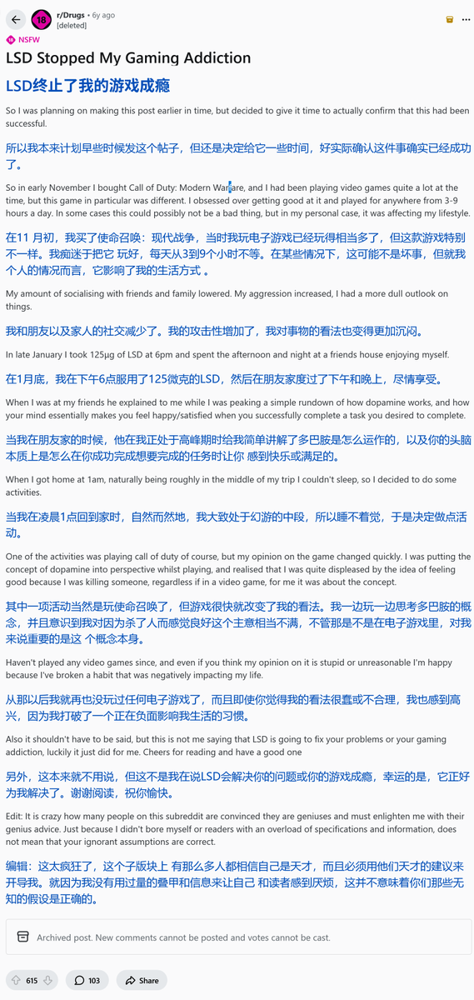

药物报告连载day11——致幻剂与成瘾
贴主深受游戏成瘾之害。在与朋友一起服用LSD后，他的游戏成瘾消失了。
很赞同原贴评论区的一个观点：致幻剂能让你考虑先前没有任何动因考虑的事情，以此改变你的某些固有观念，并留下深远的影响。
不过话说回来，过度使用致幻剂的终点就是发疯，请大家适度幻游哦🥺

贴主深受游戏成瘾之害。在与朋友一起服用LSD后，他的游戏成瘾消失了。
很赞同原贴评论区的一个观点：致幻剂能让你考虑先前没有任何动因考虑的事情，以此改变你的某些固有观念，并留下深远的影响。
不过话说回来，过度使用致幻剂的终点就是发疯，请大家适度幻游哦🥺

药物报告连载day10——使用药物的时机与成瘾的联系
贴主认为，如果你非医用地使用药物的目的是解决一些问题，或获取某些能力，那么你就更容易成瘾，后果得不偿失。
窝野看到过一些说法，说富人对于药物成瘾具有更强的抗性，甚至是对生理成瘾的阿片类药物......🥺或许这个说法与贴主的说法是照应的呢🤔 https://t.co/PiVarY2LAQ https://t.co/0tu1fVaSKX
贴主认为，如果你非医用地使用药物的目的是解决一些问题，或获取某些能力，那么你就更容易成瘾，后果得不偿失。
窝野看到过一些说法，说富人对于药物成瘾具有更强的抗性，甚至是对生理成瘾的阿片类药物......🥺或许这个说法与贴主的说法是照应的呢🤔 https://t.co/PiVarY2LAQ https://t.co/0tu1fVaSKX